Cadastro de assinantes
Cadastrando o assinante
Acesse Wesign > Cadastro de Assinantes.
Para facilitar o envio de documentos para assinatura, você pode cadastrar participantes frequentes na base de dados. Assim, não será necessário digitar as informações deles a cada novo envio.
O cadastro de assinante não é obrigatório para enviar um documento ao assinante.
Os dados utilizados são:
- Nome*: nome do assinante.
- E-mail*: e-mail do assinante que receberá o link de assinatura e notificações de conclusão do processo de assinatura
- CPF*: CPF do assinante.
- Celular: Celular do assinante que receberá notificações quando selecionado tipo de autenticação no envio do documento. Deve ser informado no padrão internacional, incluindo o código do país.
- Título: nomenclatura opcional utilizada para identificar o assinante no processo de assinaturas e no manifesto, por exemplo, “Cliente”, “Representante da empresa X”, “Diretor Financeiro”, “Gerente”.
- Empresa: nome da empresa do assinante. Utilizado para facilitar a identificação do assinante no envio de documento. Esse dado não é utilizado no fluxo de assinaturas, servindo apenas de identificador no fluig.
- Tipo de Assinatura*: escolher o tipo de assinatura que o assinante utilizará no fluxo de assinaturas. Abaixo, mais detalhes sobre as opções disponíveis:
Assinatura digital
A assinatura digital utiliza um Certificado Digital ICP Brasil para comprovar a autoria da assinatura. A assinatura digital garante autenticidade, integridade e não repúdio (signatário não tem como negar sua autoria). O Certificado Digital é a identidade digital da pessoa física e jurídica no meio eletrônico. É validado presencialmente, não permitindo fraudes. Se você necessita mandar documentos para fora de sua rede, é fundamental que haja confiança pública para que a assinatura seja automaticamente aceita pelos diferentes órgãos e empresas. Nesse caso, a assinatura digital é mais conveniente, pois possui a mesma validade jurídica de um documento com firma reconhecida em cartório.
Assinatura eletrônica
A assinatura eletrônica coleta evidências para comprovar a autoria da assinatura em um documento e não utiliza um Certificado Digital. Estas evidências são coletadas no momento da assinatura. O Portal coleta três principais: a grafia do signatário (com uma caneta touch, dedo, mouse ou a imagem digitalizada), IP da máquina e geolocalização. A assinatura eletrônica viabiliza a migração de ações do dia a dia da empresa do meio físico para o digital, reduzindo custos operacionais e poupando tempo. Se você necessita apenas deixar de usar papel e agilizar os processos, então conformidade e confiança não devem ser um problema, e a assinatura eletrônica pode ser considerada.
Autorizador
O usuário autorizador terá a opção de negar ou autorizar um documento, sendo assim, possui uma ação e o documento só é finalizado após todos os participantes finalizarem suas ações. Caso o autorizador negue, o documento é bloqueado só sendo permitido desbloquear com um usuário administrador ou remetente.
Observador
É um participante do fluxo sem nenhuma ação no mesmo, ou seja, não irá assinar. O usuário receberá notificações sobre o documento e terá permissão para visualiza-lo.
*Preenchimento obrigatório

Editando dados do assinante
Localize o registro do assinante, clique sob o registro e depois clique no botão Editar.
Os campos disponíveis para alteração serão liberados. Após a conclusão, clique em Salvar.

Removendo o assinante
Localize o registro do assinante, clique sob o registro e depois clique no botão Remover.
Será exibida uma mensagem de confirmação para realizar a ação desejada.
Carregando todos os assinantes
Por padrão, a página carrega apenas os 100 primeiros assinantes da base para garantir melhor performance. Para visualizar todos os assinantes, clique em Carregar todos os assinantes. Uma mensagem de confirmação será exibida e, ao confirmar, o sistema carregará todos os registros. Esse processo pode levar alguns minutos, dependendo da quantidade de dados.
Importando assinantes
A opção Importar Assinantes permite informar uma planilha no formato .CSV para criação dos assinantes em lote.
Basta o usuário selecionar a opção Mais ações > Gerar layout de importação de assinantes e preencher as informações para cadastro.
A importação de assinantes que possuam inconsistências em seus dados (e-mail inválido, CPF inválido ou duplicado, tipo de assinatura diferente do padrão aceito) serão descartados e não serão importados.
Assinantes já existentes não terão seus dados atualizados.
Preenchimento das informações.
- Nome*: Nome do assinante. Exemplo: "Suporte Wesign".
- E-mail*: E-mail do assinante. Exemplo: "suportewesign@wesign.com.br".
- CPF*: número do CPF com pontuação. Exemplo: "123.456.789-10"
- Tipo de Assinatura*: Valores aceitos: E (Assinatura Eletrônica), D (Assinatura digital); A (Autorizador) e O (Observador). Exemplo: "E"
- Celular: celular do assinante no padrão internacional. Exemplo: "5511999999999"
- Título: título que será utilizado pelo assinante. Exemplo: "Analista Wesign"
- Empresa: empresa do assinante. Exemplo: "Wesign"
*Preenchimento obrigatório
Exportando os assinantes
Para gerar uma planilha com os assinantes cadastrados, utilize a opção Mais ações > Exportar assinantes.
Excluindo todos assinantes
Para excluir todos os assinantes cadastrados, utilize a opção Mais ações > Excluir todos.
Será exibida uma mensagem de confirmação para realizar a ação desejada.
Portal de Assinaturas
Enviando um documento para assinatura
Para realizar o envio de um documento para assinatura, siga os passos abaixo.
-
Acesse Wesign > Portal de Assinaturas ;
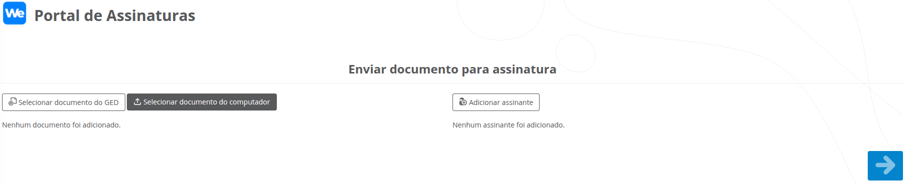
-
Selecione o documento para assinatura;
O usuário terá as seguintes opções disponíveis:
-
Selecionar documento do GED: selecione um documento que já está publicado no GED (Documentos) da plataforma TOTVS fluig. Será exibida as pastas e documentos que o usuário possui acesso no TOTVS fluig. Após localizar o documento, basta clicar na caixa de seleção ao lado do nome do documento e depois clicar em Selecionar

-
Selecionar documento do computador: selecione um documento que esteja em seu computador e posteriormente, selecione a pasta do GED onde esse documento será publicado automaticamente. Após localizar o documento, basta clicar na caixa de seleção ao lado do nome do documento e depois clicar em Selecionar.

-
Selecionar o documento e escolher uma das duas opções disponíveis. Ambas as opções irão disponibilizar toda a estrutura atual do GED que o usuário possui permissão, sendo comportamento nativo da plataforma fluig. Os formatos de documentos suportados para envio são:
- .docx
- .doc
- .xls
Os documentos enviados para assinatura devem ter tamanho máximo de 10MB.
AVISO - Não selecione/publique documento em uma pasta que esteja restrita ao papel de ‘admin’ do fluig. Caso isso seja feito, o documento não será enviado pois não será possível ler o conteúdo do arquivo.
Opções disponíveis:
Após selecionado o documento, informe os assinantes. Para isso, clique no botão Adicionar Assinante.
Na tela seguinte, informe os dados do assinante do documento. Os assinantes incluídos não serão cadastrados na base de dados e não é necessário cadastrar um assinante para incluir no fluxo de assinaturas. Os dados abaixo devem ser preenchidos.
- Selecione o assinante: selecione assinantes já cadastrados na página Cadastro de Assinantes. Após selecionado, seus dados serão preenchidos automaticamente nos respectivos campos;
- Etapa (obrigatório): informe a etapa que o assinante deve assinar. Se não existir ordem de assinatura, então, por padrão, deixe a etapa como “1”. Caso exista ordem para assinaturas, informe a etapa que o assinante deve assinar. Por exemplo, o “Assinante 1” deve assinar antes do “Assinante 2” e “Assinante 3”, então o “Assinante 1” ficará na etapa 1, e o “Assinante 2” e “Assinante 3” ficarão na etapa 2. Caso seja necessário adicionar mais etapas, basta clicar no botão “Incluir nova etapa”;
- E-mail (obrigatório): e-mail do assinante que receberá o link de assinatura e notificações de conclusão do processo de assinatura;
- CPF (opcional): CPF do assinante;
- Título (opcional): nomenclatura opcional utilizada para identificar o assinante no processo de assinaturas e no manifesto, por exemplo, “Cliente”, “Representante da empresa X”, “Diretor Financeiro”, “Gerente”, etc.
- Tipo de Assinatura (obrigatório): escolher o tipo de assinatura que o assinante utilizará no fluxo de assinaturas. Veja o detalhamento de cada opção aqui [redirecionar para o cadastro de assinantes].
Informado os dados, basta clicar em Concluir(botão verde). Adicione o número desejado de assinantes, sempre respeitando os tipos de documentos que foram contratados pela empresa. Por padrão, são 10 assinantes para um documento de até 10 mb. Após adicionar todos assinantes, basta clicar em Concluir (botão preto) no fim da tela para adicionar os assinantes ao documento.
Verifique se está tudo correto e se sim, basta clicar no botão Enviar (ícone azul).
Após o documento ser enviado para assinatura, todos os participantes relacionados no documento receberão um e-mail de notificação de conclusão assim que o documento for completamente assinado, ou seja, quando não houver mais assinaturas pendentes.
Sempre verifique no Quadro de Status se o documento foi realmente enviado, pois podem ocorrer erros durante o envio e os mesmos deverão ser corrigidos.
Observação
O documento encaminhado para assinatura a partir do fluig é enviado para o Portal de Assinaturas Vertsign onde o mesmo será assinado.
Caso o alerta do navegador seja exibido no processo de envio do(s) documento(s), clique em Aguarde. Normalmente essa mensagem é exibida quando documentos pesados ou vários documentos estão sendo enviados ao mesmo tempo.


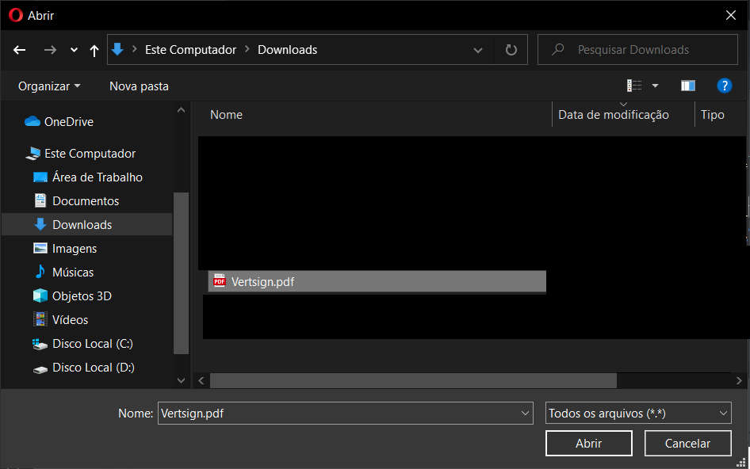
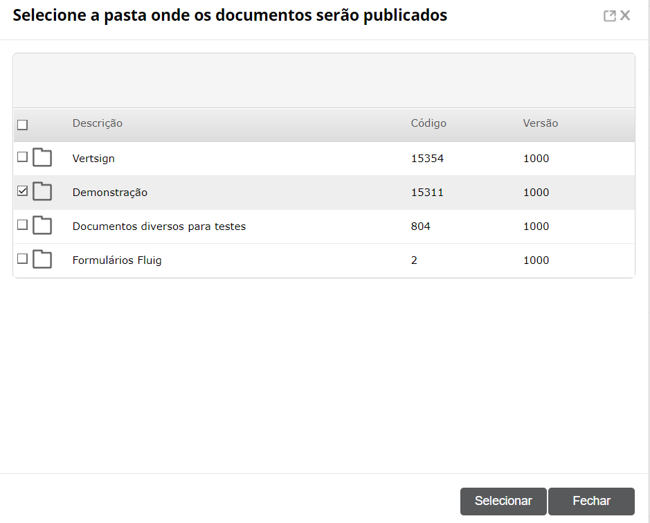
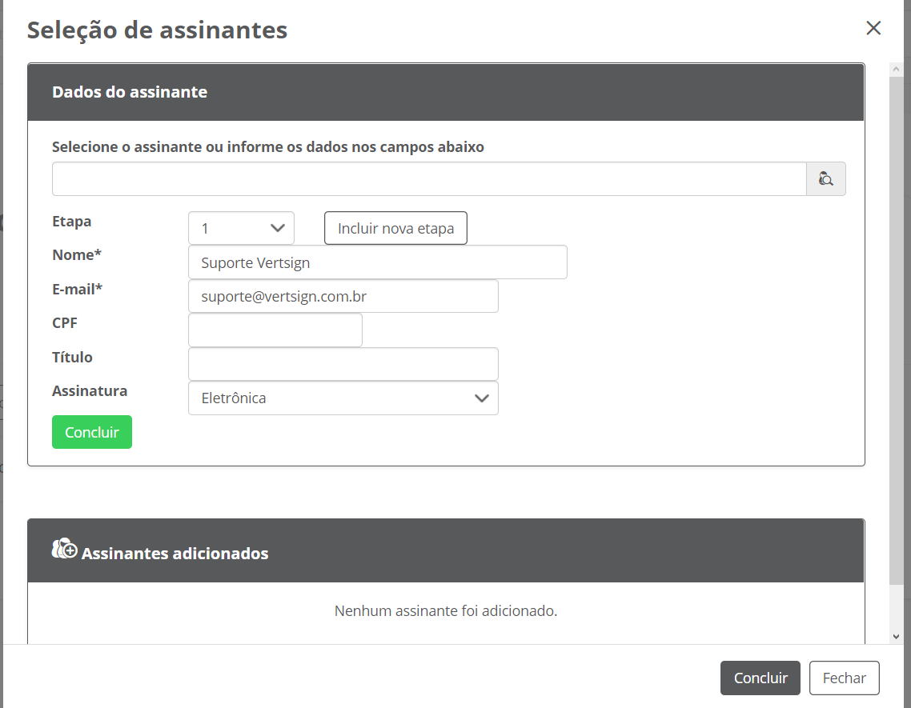
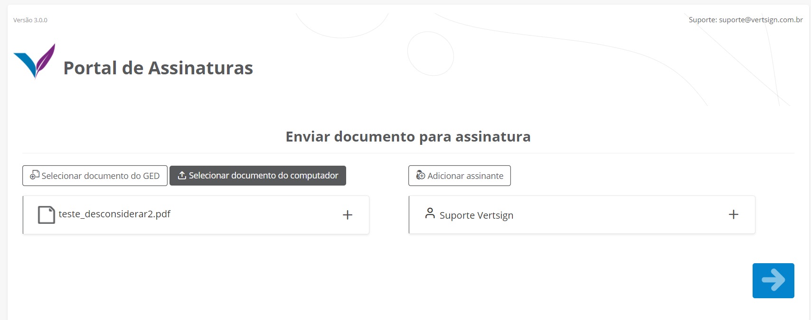
Email de notificação
Após o envio do documento para assinatura, os assinantes receberão um e-mail do Portal de Assinaturas da Vertsign informando que a assinatura do documento está pendente.
A imagem abaixo é um exemplo do formato do e-mail recebido por um assinante:
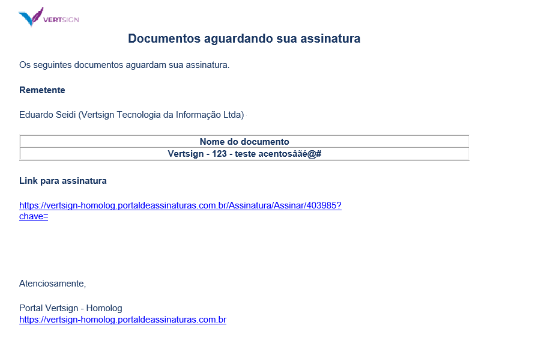
Agora basta clicar no link do documento para ser redirecionado para a página do Portal de Assinaturas e ter acesso ao conteúdo do documento e assinatura.
O layout pode variar conforme a evolução da plataforma de assinaturas, porém sempre seguirá o padrão de dados, com o nome do remetente, nome da empresa, nome do documento, link para assinatura.
Quadro de Status
Modo de utilização
Através do Quadro de Status é possível que o usuário visualize todos os documentos, porém, ele não poderá visualizar o conteúdo de um arquivo caso não tenha permissão no GED do fluig. Todas as regras de segurança do GED serão respeitadas no que diz respeito à visualização do conteúdo de um documento. As ações como: Notificar assinantes pendentes, Incluir novo assinante, Cancelar assinatura, Descartar assinante, Compartilhar link de assinatura só estarão disponíveis para usuários no papel admin e para o remetente do documento.
É possível realizar um filtro nos documentos exibidos no Quadro de Status. Ao abrir a tela, nenhum registro será carregado. Somente após o preenchimento dos dados e a execução que serão disponibilizados os dados em tela. Pode-se realizar a busca nos documentos com os seguintes parâmetros:
- Data de Envio: data em que o documento foi enviado. Por padrão, sempre trará o primeiro dia do mês corrente até a data atual de execução;
- Status do documento: busque apenas os documentos com o status desejado. Por padrão, tratá “Todos”, que são todos os status disponíveis;
- Remetente: busque documentos que um remetente específico enviou. Por padrão, trará o usuário corrente como “Remetente”;
- Código do documento: busque o documento pelo seu ID no GED. Se não informado, buscará todos os documentos. Por padrão, o valor será deixado em branco;
- Nome do documento: busque o documento por palavras que contenham em seu nome. Se não informado, buscará todos os documentos. Por padrão, o valor será deixado em branco;
- Listar apenas os documentos onde minha assinatura é necessária: listará apenas os documentos onde o e-mail do usuário logado no fluig esteja presente na lista de participantes do documento, sempre respeitando os parâmetros acima mencionados.
Cada aba representa um status de documento diferente. Clique na aba desejada para visualizar os documentos.
A atualização dos documentos enviados para assinatura são atualizados no Quadro de Status de duas formas:
- Automaticamente através de rotinas sincronizadas (por padrão, executa-se 1 vez ao dia, porém o cliente pode alterar conforme preferência);
- Automaticamente através do Callback. Esse serviço fornece a atualização instantânea dos status dos assinantes e deve ser ativada na etapa de Instalação e Configuração.
No Quadro de Status também é possível visualizar o status da assinatura de cada assinante. A exibição dos status estarão disponíveis caso o Serviço Callback esteja ativo.
Após filtrar os documentos, na aba “Pendente”, na coluna “Assinantes”, ao clicar no número de assinantes, é possível realizar as seguintes ações no documento:
- Notificar assinantes pendentes: Permite reenviar o e-mail de assinatura para os assinantes que ainda estão pendentes.
- Assinar documento: Caso o e-mail do usuário logado no fluig seja o mesmo que um dos assinantes, é possível realizar a assinatura clicando nesse botão.
- Incluir novo assinante: Permite adicionar mais assinantes no fluxo de assinatura do documento.
- Cancelar assinatura: Permite cancelar a assinatura do documento. Também é possível cancelar através da widget Portal de Assinaturas
Também existem ações que podem ser tomadas para cada assinante:
- Compartilhar link de assinatura: Permite compartilhar o link de assinatura do signatário.
- Descartar assinante: Permite remover o assinante do fluxo de assinatura do documento.
- Motivo: Caso o assinante tenha rejeitado o documento, é possível visualizar o seu motivo de rejeição.
É possível visualizar o status de assinatura de um documento enviado diretamente pelo GED do Fluig. Para isso, acesse as propriedades do documento enviado. Na aba “Informações Gerais”, na seção “Campo Customizado”, é possível visualizar o status do documento: “Enviando para assinatura”, “Pendente Assinatura”, “Assinado” e “Rejeitado”.

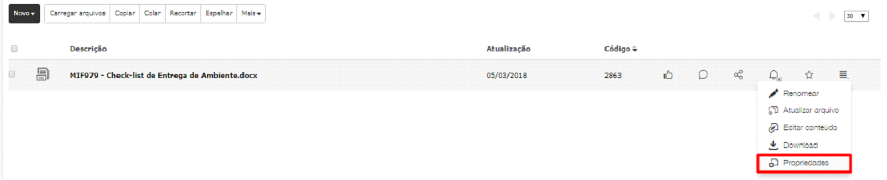
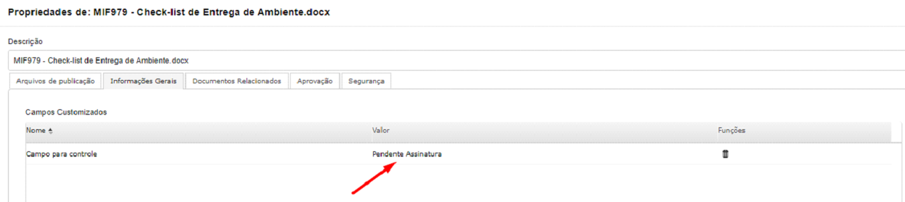
Notificando os assinantes pendente de assinatura
Os documentos enviados para assinatura podem acabar sendo esquecidos devido à rotina dos participantes. Para enviar um lembrete de assinatura do documento, realize o procedimento abaixo.
- Realize a busca do documento e o localize na aba Pendente, na coluna Assinantes, clique no número de assinantes.
- Clique em Notificar assinantes pendente e aguarde a mensagem de conclusão.
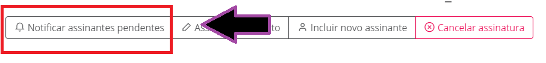
Assinar documento no fluig
O participante pode assinar o documento diretamente pelo fluig. Ao selecionar essa opção, abrirá uma nova página do navegador em que redireciona para o Portal de Assinaturas, onde o participante realizará a assinatura. Essa opção só está disponível se o e-mail do usuário logado no fluig for igual ao e-mail de um dos participantes. Para isso, realize o procedimento abaixo.
- Realize a busca do documento e o localize na aba Pendente, na coluna Assinantes, clique no número de assinantes.
- Clique em Assinar documento e abrirá uma nova janela no navegador para assinatura do documento.
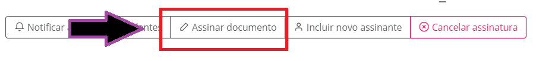
Incluindo assinante
Após o documento ter sido enviado para assinatura, pode ser necessário incluir novos participantes no fluxo de assinatura. Para isso, realize o procedimento abaixo.
- Realize a busca do documento e o localize na aba Pendente, na coluna Assinantes, clique no número de assinantes.
- Clique em Incluir novo assinante para informar quais participantes serão incluídos no fluxo de assinatura do documento. Após selecionar os usuários desejados, clique em Concluir. Após todos os participantes terem sido informados, clique em Enviar.
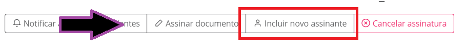
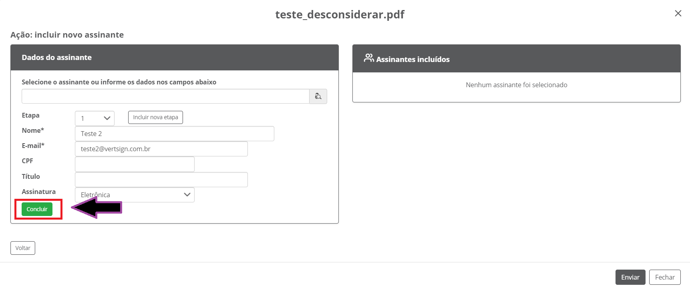
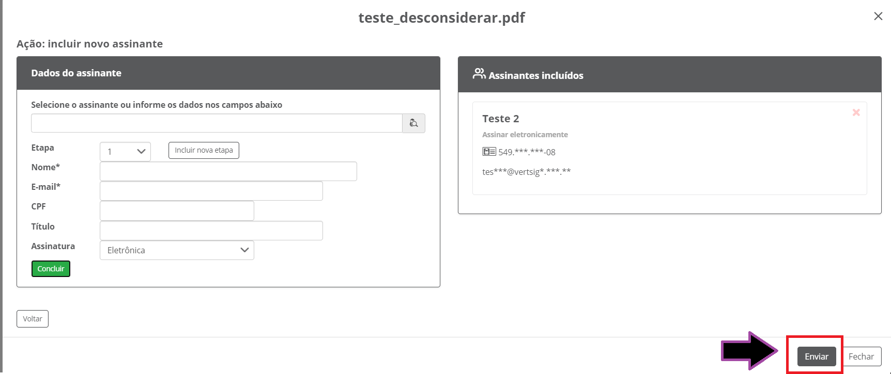

Descartando assinante
Após o documento ter sido enviado, pode ser necessário descartar a participação de um participante do documento. Para isso, realize o procedimento abaixo.
- Realize a busca do documento e o localize na aba Pendente, na coluna Assinantes, clique no número de assinantes.
- Localize o assinante desejado e na coluna Ações do assinante, clique no botão.
- Selecione a opção Descartar assinante e aguarde a mensagem de conclusão.


Cancelando um documento
Para cancelar um documento, primeiramente ele deve ter sido enviado para assinatura. Após o cancelamento, o documento será excluído do portal.
O usuário será notificado por e-mail informando que o documento foi excluído conforme o exemplo abaixo.
Documentos cancelados e rejeitados podem ser reenviados para assinatura.
Para cancelar um documento, realize o procedimento abaixo.
- Realize a busca do documento e o localize na aba Pendente, na coluna Assinantes, clique no número de assinantes.
- Selecione a opção Cancelar Assinatura e aguarde a mensagem de conclusão.
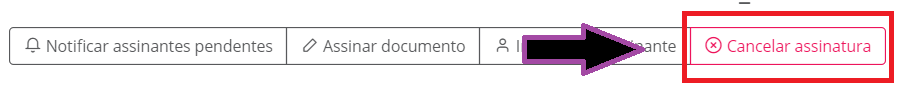
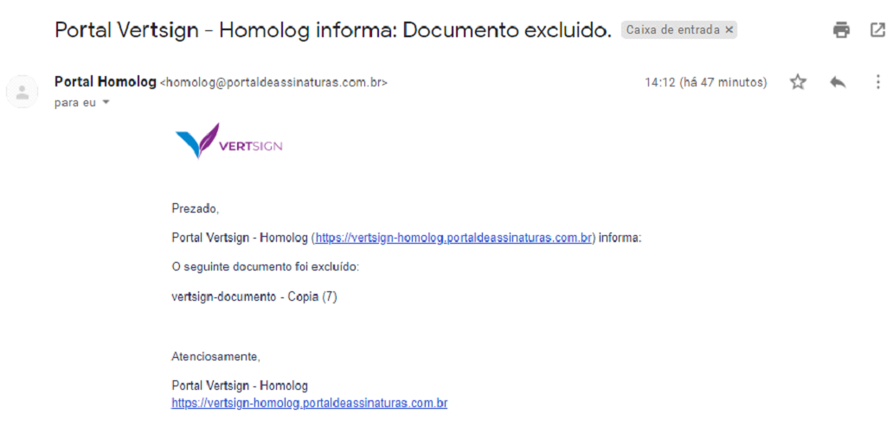
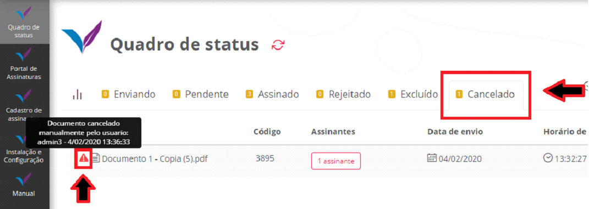
Verificando documento assinado
O manifesto é um documento eletrônico retornado para o fluig após o documento ter sido assinado. Nele, contém informações sobre quem assinou, data de assinatura e qual a forma de assinatura utilizada, além de recolher outras evidências, como geolocalização, imagem da assinatura eletrônica.
Após o documento ser assinado, deve-se aguardar a execução da rotina que permite baixar os documentos assinados do Portal da Vertsign. Caso o serviço Callback esteja ativo, ele será responsável por realizar o download automático quando o documento for assinado.
Caso não possua o Callback ativo na base, existem rotinas agendadas que verificam o status do documento no Portal de Assinaturas e geram seu manifesto. Por padrão, essa rotina é executada uma vez por dia, mas pode-se alterar conforme a preferência.
Acesse o tópico Rotinas de integração para mais informações sobre o agendamento.
Em seguida, o manifesto será inserido como anexo no documento original no GED do fluig. Podem ocorrer casos em que ele não se encontre como anexo do documento original, mas esteja na mesma pasta do documento original. Nesse caso, basta baixar o documento em sua máquina e anexar no documento original. Para verificar o manifesto, realize o procedimento abaixo.
- Realize a busca do documento e o localize na aba Assinado;
- Após localizar o documento, na coluna Código, clique no código do documento no GED do fluig;
- Você será redirecionado para o documento;
- Localize no canto superior direito a opção Ações do Documento > Ver anexos;
- Clique no nome do manifesto para baixá-lo em seu computador;
- Após baixar, basta extrair o arquivo e terá todas as evidências.
Excluindo documento do GED
Caso um documento que esteja com status Enviando para assinatura seja excluído do GED do fluig, a rotina de envio para assinatura irá detectar a exclusão do mesmo e interromper o processo de envio para o Portal de Assinaturas Vertsign.
Se o documento estiver com status Pendente Assinatura, a rotina de retorno do documento assinado irá detectar a exclusão do documento original no GED do Fluig e deletar o documento no Portal de Assinaturas Vertsign.
Se o documento já foi assinado, mas o mesmo foi excluído do GED do fluig, o manifesto será direcionado para a pasta Excluídos. Por exemplo, um documento qualquer é enviado para assinatura, ele é assinado, mas ao retornar o manifesto para o fluig percebe-se que o documento original foi excluído no GED. Dessa forma não será possível anexar o manifesto. Então o manifesto será criado na pasta Excluídos junto com o documento original.
Se o documento já foi assinado, mas o mesmo foi excluído do GED do fluig, o manifesto será direcionado para a pasta Excluídos. Por exemplo, um documento qualquer é enviado para assinatura, ele é assinado, mas ao retornar o manifesto para o fluig percebe-se que o documento original foi excluído no GED. Dessa forma não será possível anexar o manifesto. Então o manifesto será criado na pasta Excluídos junto com o documento original.
Extraindo relatório
Para extrair uma planilha do Excel com os dados do documento, realize o procedimento abaixo.
- Realize a busca dos documentos, informando os filtros desejados;
- Na primeira aba, onde fica o gráfico geral de documentos, localize a opção Mais ações > Exportar;
- Será gerado uma planilha Excel com dados básicos para gerenciar as informações.